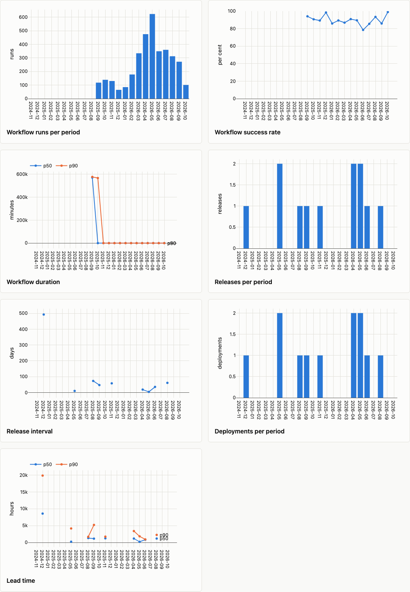

Delivery and DORA¶
How a project ships: workflow runs, releases, and proxies for the four DORA keys.
wambatic report repo:pallets/click --groups delivery
delivery is not in the default groups, because it reads every workflow run of every repository. Use
--groups activity,flow,delivery for everything but popularity. Every metric is defined in the
metrics reference.
Runs and releases¶
| Metric | What it is |
|---|---|
workflow_runs |
Workflow runs created in the period, whatever their state |
workflow_success_rate |
The share of completed runs that succeeded, shown as a percentage |
workflow_duration_p50, workflow_duration_p90 |
Minutes from a completed run starting to its last update |
release_count |
Releases published in the period, prereleases included, drafts left out |
release_interval_p50 |
Median whole days since the repository's previous release |
- The success rate counts only runs whose conclusion is success, failure, timed out or startup failure. Cancelled and skipped runs are not outcomes of the code and are left out of both counts.
- The duration is an approximation: GitHub does not report a run's end time, so wambatic uses the time of the run's last update.
- Runs triggered by pull requests are counted like any other.
- A period without a completed run has no success rate or duration, and
p50andp90are as in Flow. - For a user target, the runs and releases of the user's own repositories count, whoever made them.

DORA proxies¶
DORA's four keys are deployment frequency, lead time for changes, change failure rate and time to restore service. GitHub records none of them, so wambatic estimates each from what it does record. They are proxies: use them to see a trend, not to compare teams.
| DORA key | Metric |
|---|---|
| Deployment frequency | deployments |
| Lead time for changes | lead_time_p50, lead_time_p90 |
| Change failure rate | change_failure_rate |
| Time to restore service | time_to_restore_p50, time_to_restore_p90 |
What counts as a deployment¶
flowchart TD
start[A repository in the report] --> set{stats.deploy_workflow set?}
set -- yes --> run[A completed run of that workflow]
run --> ok{Did it succeed?}
ok -- yes --> dep[A deployment, at the time the run finished]
ok -- no --> none[Not a deployment]
set -- no --> rel[A published release]
rel --> pre{Is it a prerelease?}
pre -- no --> dep2[A deployment, at the time it was published]
pre -- yes --> noneDeployments are counted for each repository. stats.deploy_workflow is matched against a run's
workflow file name (deploy.yml) or its name. See Settings.
Lead time¶
Lead time runs from a merged pull request's first commit (its creation, when that is not known) to the first deployment of the same repository at or after the merge. It is placed in the period of the deployment. A pull request that no deployment has followed yet is not counted.
gantt
title Lead time of one pull request
dateFormat YYYY-MM-DD
axisFormat %d %b
section Pull request
First commit :milestone, 2026-10-01, 0d
Review and merge :active, 2026-10-01, 2026-10-08
Merged :milestone, 2026-10-08, 0d
section Release
Waiting for a deployment :active, 2026-10-08, 2026-10-14
First deployment after the merge :milestone, 2026-10-14, 0d
section Lead time
lead_time, counted in the period of the deployment :crit, 2026-10-01, 2026-10-14Change failure rate and time to restore¶
A deployment has failed when a pull request of the same repository that carries a label in
stats.hotfix_labels follows it within stats.failure_window (7 days by default). A deployment whose
window is still open at the end of the range counts as not failed. Time to restore is the time from a
hotfix pull request being opened to being merged, in the period of the merge.
gantt
title A failed change
dateFormat YYYY-MM-DD
axisFormat %d %b
section Deployment
Deployment :milestone, 2026-10-01, 0d
failure_window (7d) :active, 2026-10-01, 2026-10-08
section Hotfix pull request
Opened with the label hotfix :milestone, 2026-10-03, 0d
time_to_restore :crit, 2026-10-03, 2026-10-04
Merged :milestone, 2026-10-04, 0dHere the hotfix was opened inside the window, so the deployment counts as failed.
Unavailable metrics¶
Each proxy appears only when what it needs is in the cache; otherwise it is listed under Unavailable,
with the reason. deployments and the lead time need at least one deployment. The change failure rate
and the time to restore also need a pull request with a hotfix label. That is deliberate: a repository
that never labels its hotfixes would otherwise show a change failure rate of 0%, which reads as good news
and means nothing.
wambatic report repo:pallets/click --groups delivery --format json |
jq -r '.tables.unavailable[] | "\(.metric): \(.reason)"'
For repo:pallets/click this prints that change_failure_rate and the two time-to-restore metrics have
no pull request labelled hotfix. See JSON output.
Related¶
- Flow for the pull-request side of lead time.
- Settings for
stats.deploy_workflow,stats.hotfix_labelsandstats.failure_window. - The HTML report for the charts.